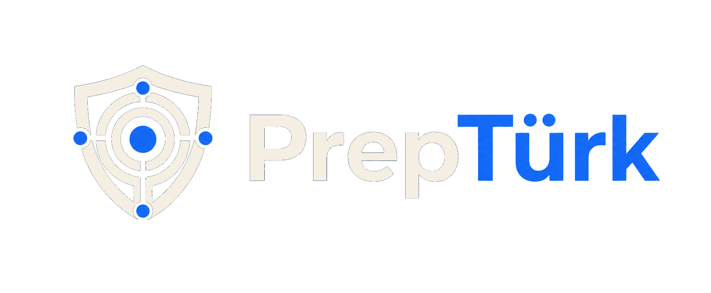

Offline-first access
Locally available preparedness material and field references.
 Monarch Castle Technologies
Monarch Castle Technologies
Resilient knowledge infrastructure

An offline-first platform for preparedness references, local document search, field coordination, and self-hosted AI assistance.
Locally available preparedness material and field references.
Self-hosted ingestion, retrieval, and document workflows.
Containerized API, worker, database, and Next.js interface.